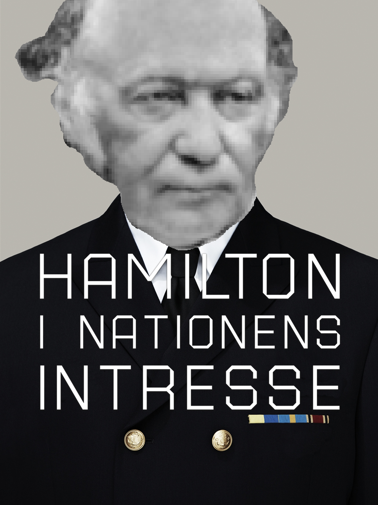

Pendel
Alla accelerationer (a, g + komposanter) är skalade med en faktor 5 för att det ska gå att se, varsågod.
Newton
Okej, den enda kraften som verkar på pendeln är gravitationen.
Vi kan enkelt splitta up den i komposanter (radiell och tangentell [checka gravity]) med lite trig.
Armen är stel och kommer att motverka all kraft i radiell riktning (gr) så vi blir bara kvar med den tangentella kraften (gt).
Vilket ger:
För att hitta den svepta sträckan kan vi använda formeln för båglängden i polära koordinater:
Här är armens längd konstant vilket innebär
och ger:
Då kan vi enkelt säga att:
Vilket leder till:
Kaboom! Där har vi vår diff-ekv.
Lagrange
Denna metod bygger på Euler-Lagrange ekvationen:
Med
Där
är den kinesiska energin och
är den potentiella energin.
I pendeln blir
:
Där
precis som i Newton-fallet.
Så då löser vi bara Euler-Lagrange:
Nu sätter vi dom lika med varanda och får:
Samma som med Newton.
Det finns många andra sätt att härleda pendeln men att formatera MathML är ett helvete så det får räcka där.
Testa med Hamiltonisk mekanik om du känner dig uttråkad.
Där är
så man räknar snarare på systemets totala energi.
